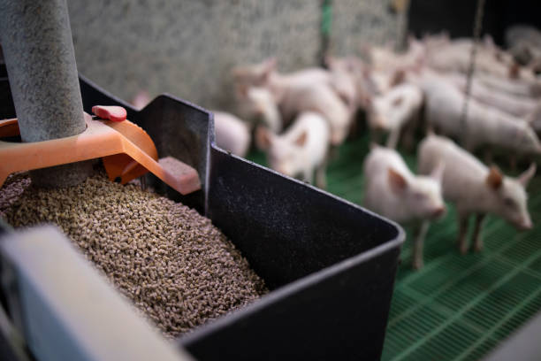
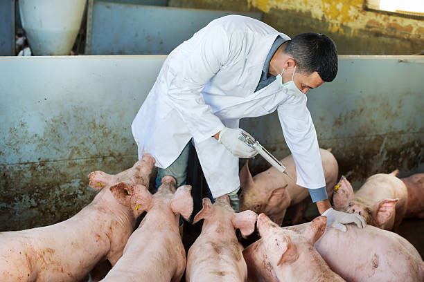
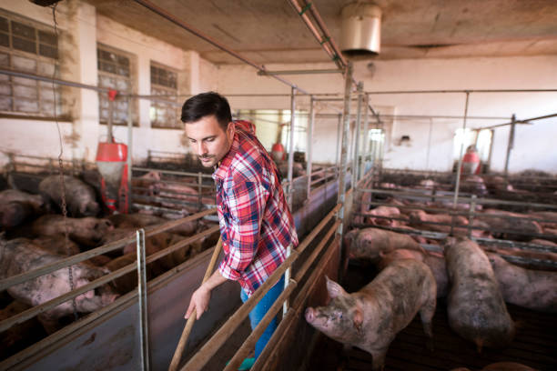

Bienbenido

Mantén un ambiente limpio y seco en el corral para prevenir enfermedades en los cerdos.

Proporciona una dieta balanceada y adecuada para asegurar el crecimiento saludable de los cerdos.

Realiza chequeos veterinarios regulares para detectar y tratar enfermedades a tiempo.

Realiza una limpieza regular de los corrales y áreas de alimentación para evitar la acumulación de desechos.